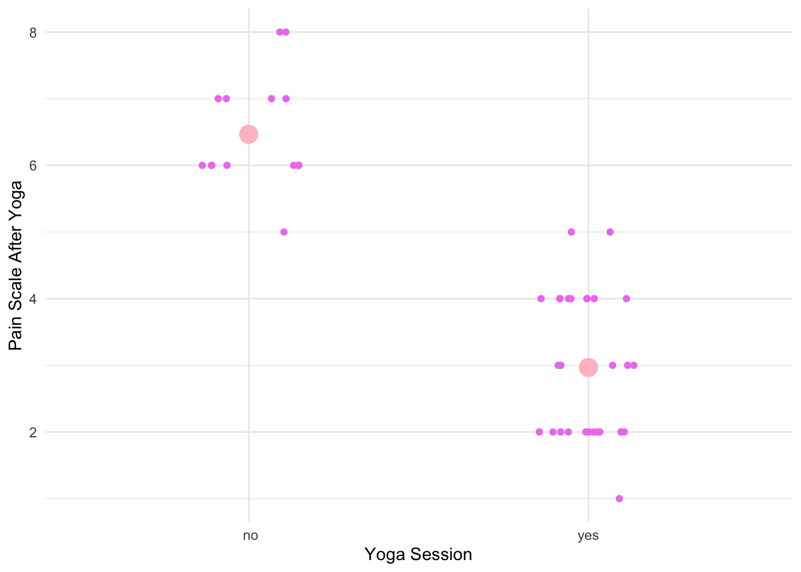
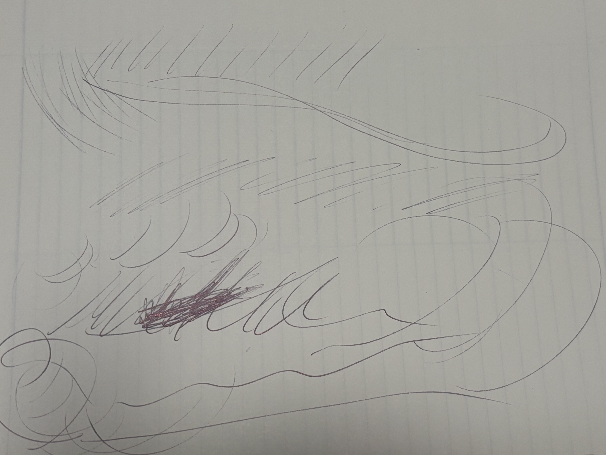

# general use
library(tidyverse)
library(gt)
library(janitor)
library(here)
library(dplyr)
# reading in data
mydata <- read.csv("/Users/moniquehernandez/Desktop/ENVS-193DS/assignment/hw-03/ENVS HW 3/data/Data.csv") |>
clean_names()ENVS-193DS Homework 03
Problem 1. Personal Data
a. Data summarizing
I could do the mean pain level after each day to analyze if there is a comparison between the days I do yoga and the days I don’t do yoga. between the days I do and don’t yoga. Though, there aren’t any changes for the days I don’t practice yoga, so I could calculate the change in pain on days I do practice such as subtracting the pain before from the pain after to measure if yoga does help chronic pain.
b. Visualization
#base layer: gg plot
ggplot(mydata, aes(x = did_you_do_yoga, # x-axis
y = pain_level_after)) + # y-axis
geom_jitter(height = 0, # no vertical
width = 0.15, # narrower jitter
color = "violet") + # color for jitter
# scond layer: point representing mean
stat_summary(geom = "point", # geometry being plotted
fun = mean, # function calculating the mean
color = "pink", # color for average
size = 5) + # larger point size
labs(x = "Yoga Session", # labeling x-axis
y= "Pain Scale After Yoga") + # labeling y-axis
theme_minimal()
c. Caption
Figure 1. Pain Level After a Yoga Session vs. No Session: Individual pain level is shown as small violet jitter points to display distribution, while the mean pain level is shown as the larger pink point. Pain level is self-assessed on a pain scale from 1-10.
d. Table presentation
Pain_summary <-mydata |> # create new summary object from mydata
group_by(did_you_do_yoga) |> # group by data whethere yoga was practiced or not
summarize(
mean_pain = round(mean(pain_level_after, na.rm = TRUE), 1), # calculate the mean pain level
)
Pain_summary |> # use summarized data
gt() |> # use gt to create a table
cols_label(
did_you_do_yoga = "Yoga Session", # rename column to Yoga Session from did you do yoga
mean_pain = "Mean Pain Level After (1-10)" # rename mean pain to Mean Pain Level After
) |>
tab_header(
title = "Average Pain Levels After Yoga vs. No Yoga" # add title on top of the table
)| Average Pain Levels After Yoga vs. No Yoga | |
|---|---|
| Yoga Session | Mean Pain Level After (1-10) |
| no | 6.5 |
| yes | 3.0 |
Problem 2. Affective visualization
a. Describe affective visualization
I could do an image of a dark, vast ocean with a small boat can depict the isolation of dealing with chronic pain as it can feel like a long lonely journey. I can have a contrast with brihgt and dark colors from the ocean and the sky depicting a ray of light. The light in this case can be a message that the chronic pain can be manageable. The boat could be seen more than the physical vessel, it is a metaphor for struggling to stay afloat on a daily basis.
b. Create a sketch

c. Make a draft of your visualization

d. Write an artist statement
Content: The painting depicts an intense snapshot, out in the middle of the ocean during a stormy, semi-dark night. The dark colors such as blue, purple, and red represent the bleakness of chronic pain, while the bright streak of colors of yellow, orange, and pink represents a sense of hope. The point of view could be coming from being on the boat, but overall it is left for the viewer’s interpretation. Lastly,the rough and calm waves depict good and bad days regarding chronic pain.
Influence: When doing this art piece, I thought of an impressionist style—capturing a moment and translating raw emotion into something that can be physically seen and understood by someone who may not feel chronic pain. It is an attempt to turn pain into art through a creative, hands-on approach.
Form: The artwork was made with acrylic on a small canvas using an array of colors including purple, pink, orange, red, yellow, and blue.
Process: I had paint I have been wanting to use and thought this assignment could be a type of experiment to blend data science and visual art as an outlet for my creativity. It took roughly an hour since the canvas is small, but some layers had to dry though I used the wet acrylic to blend some colors together.
Problem 3. Statistical critique
a. Revisit and summarize
The statistical tool is the Mann-Whitney test which is needed to compare the two independent variables which are the communities that were used in the study. The response variable is the quality of the park and the predictor variable is the location. The Mann-Whitney test will be used to compare the quality of the park to its socio- economic status and background. A significant result would be that there is a disparity between park quality and location due to its population composition such as educational levels, race, and economic status.
b. Visual clarity
The author chose to present their statistical findings in a table (Table 3) rather than a figure displaying key summary statistics such as the median, mean, and standard deviation for each park quality category across the two cities. It also includes the Mann-Whitney U statistic and corresponding p-values, which clearly communicate the statistical comparisons, though the interpretation can be less intuitive for some readers to be .
c. Aesthetic clarity
Table #3 is neatly organized with the groups in bold to left indicating park quality categories which is good for guiding the reader’s eye. The top row is separated by the two park location in bold, carefully organized with the mean, median, SD, and overall U and p-values down their respective columns as well as an “all” group. Overall, clutter is avoided with a clean, well-organized table.
d. Recommendations
Despite the table being well organized and easy to read, it could benefit from horizontal lines separating the mean, median, SD, and the overall p-values. With three summary statistics (mean, median, SD) presented for each of the three park categories, across two locations and an overall group, along with the U and p-values, the table contains 33 individual values, which can be overwhelming to visually digest. Adding a figure, such as a box plot or jitter plot, can help as it can show the differences in park quality between the two locations at a quick glance. Thus, including a figure can depict trends and variation across park categories more efficiently.